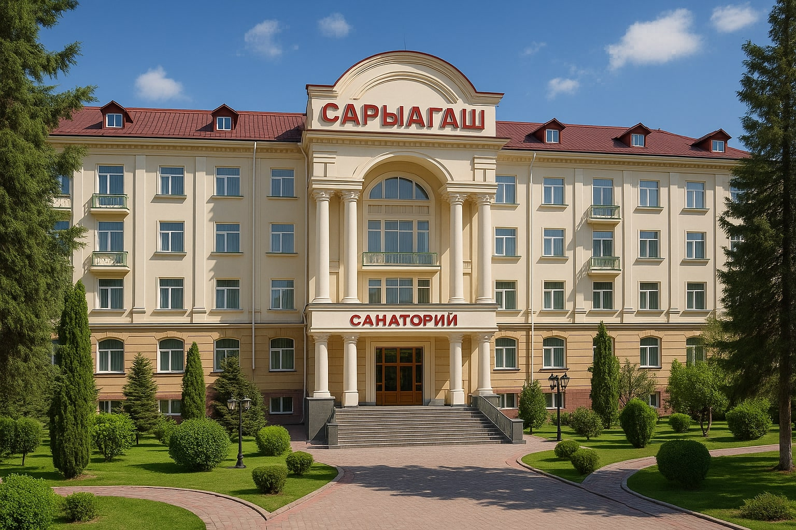

Расположение: Туркестанская область, г. Сарыагаш
Санаторий "Сарыагаш Курорт" предлагает широкий спектр лечебных процедур на основе уникальной минеральной воды "Сарыагаш". Основные направления лечения: заболевания желудочно-кишечного тракта, печени, желчевыводящих путей, обмена веществ. Комфортабельные номера и развитая инфраструктура сделают ваш отдых приятным и полезным.